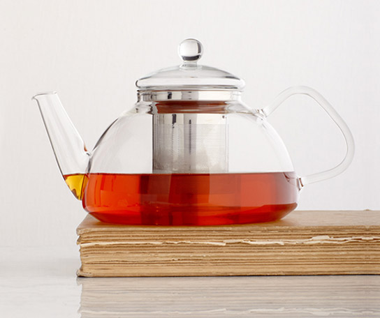

Tazo is life, reblended

Why We Blend
Everything we do is rooted in our love and reverence for tea. And the tradition of blending teas with botanicals, herbs, roots and spices is as old as the tradition of drinking tea itself. We have longstanding relationships with top tea gardens all over the world. We purchase unblended teas at the peak of freshness and we deliver them into the expert hands of our blenders. In turn they artfully alchemize these treasures into tapestries of places, times, cultures and ideas.